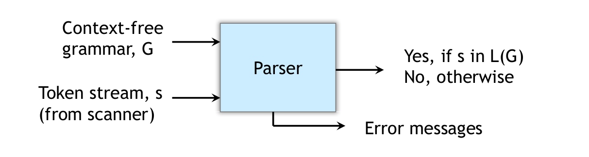

Syntax Analysis
Goal – 判斷 input token stream 是否滿足程式語言的 syntax
Lexical Analyzer or Scanner:
lexeme
if
(
b
==
0
)
a
=
b
;
token
KWif
(
ID
==
NUM
)
ID
=
ID
SEMI
Syntax Analyzer or Parser:
1 2 3 4 5 if / \ == = / \ / \ b 0 a b
速成 Syntax Analysis: https://www.youtube.com/watch?v=uPnpkWwO9hE&list=PLW1OMpQZxu7xMh7nuDQYQ2mDcqY2hzBWk
Syntax Error-Recovery Strategies
Panic-mode Recovery (simple)
忽略 input symbols 直到找到 synchronizing tokens (通常是 delimiter)
Phrase-level Recovery
局部修正錯誤
e.g. comma → semicolon, insert/delete semicolon
Error-productions
將可能的 error 情形寫成 productions 加到 grammar 中
產生對應的 error diagnostics
Global-correction (theoretical)
Context-Free Grammars
G = ( T , N , S , P ) T : t e r m i n a l s = t o k e n o r ε N : n o n t e r m i n a l s = s y n t a c t i c v a r i a b l e s S : s t a r t s y m b o l = s p e c i a l n o n t e r m i n a l P : p r o d u c t i o n s o f t h e f o r m = h e a d → b o d y G = (T, N, S, P)\\
T: terminals = token\,or\,\varepsilon\\
N: nonterminals = syntactic\,variables\\
S: start\,symbol = special\,nonterminal\\
P: productions\,of\,the\,form = head \to body
G = ( T , N , S , P ) T : t e r m i n a l s = t o k e n o r ε N : n o n t e r m i n a l s = s y n t a c t i c v a r i a b l e s S : s t a r t s y m b o l = s p e c i a l n o n t e r m i n a l P : p r o d u c t i o n s o f t h e f o r m = h e a d → b o d y
More on CFGs, see: 正規語言概論
消除 ambiguity
有多種 parse trees 的 grammar 稱為 ambiguous grammar
solution : 重寫 grammar
例子1: 對每個 precedence level 多加一個 nonterminal
1 2 3 4 5 E → E + E | E * E | –E | (E) | id 轉為 E → E + E | T T → T * T | F F → –E | (E) | id
problem:
無法辨識有結合律的語句 (e.g. id + id + id)
solution:
E → E + E ，因為 + 的兩側都是 E ，需要將 E 轉成另一個 nonterminal 來解決結合律的問題: E → E + T | T
1 2 3 4 5 6 7 E → E + E | T T → T * T | F F → –E | (E) | id 轉為 E → E + T | T T → T * T | F F → –E | (E) | id
例子2: if 的巢狀結構 (重寫 grammar 有時可能需要對某些情形做特判)
1 2 stmt → if-stmt | while-stmt | ... if-stmt → if expr then stmt else stmt | if expr then stmt
input: if (a) then if (b) then x = c else x = d
ambiguity:
if (a) then {if (b) then x = c} else x = d
if (a) then {if (b) then x = c else x = d}
solution:
1 2 3 4 if-stmt → unmatched-stmt | matched-stmt matched-stmt → if expr then matched-stmt else matched-stmt | others unmatched-stmt → if expr then matched-stmt else unmatched-stmt unmatched-stmt → if expr then if-stmt
一旦進入 matched-stmt 就無法再回到 unmatched-stmt
消除 left recursion
A grammar is left recursive if it has a nonterminal A A A A ⇒ + A α A \overset{+}{\Rightarrow} A \alpha A ⇒ + A α α \alpha α
Top-down parsing 無法處理 left-recursive grammars
solution:
由 A → A α ∣ β A \rightarrow A \alpha \, | \, \beta A → A α ∣ β A → β A ′ A \rightarrow \beta A' A → β A ′ A ′ → α A ′ ∣ ε A' \rightarrow \alpha A' | \varepsilon A ′ → α A ′ ∣ ε
In general:
A → A α 1 ∣ A α 2 ∣ . . . ∣ A α m ∣ β 1 ∣ β 2 ∣ . . . ∣ β n ↓ A → β 1 A ′ ∣ β 2 A ′ ∣ . . . ∣ β n A ′ A ′ → α 1 A ′ ∣ α 2 A ′ ∣ . . . ∣ α m A ′ ∣ ε A \to A \alpha_1| A \alpha_2 | ...|A \alpha_m | \beta_1 | \beta_2 | ... | \beta_n\\
\downarrow\\
A \to \beta_1 A' | \beta_2 A' | ... | \beta_n A'\\
A' \to \alpha_1 A' | \alpha_2 A' | ... | \alpha_m A' | \varepsilon
A → A α 1 ∣ A α 2 ∣ . . . ∣ A α m ∣ β 1 ∣ β 2 ∣ . . . ∣ β n ↓ A → β 1 A ′ ∣ β 2 A ′ ∣ . . . ∣ β n A ′ A ′ → α 1 A ′ ∣ α 2 A ′ ∣ . . . ∣ α m A ′ ∣ ε
problem:
不能消除需要多次轉換才出現的 left-recursive
e.g.
S → A a ∣ b A → A c ∣ S d ∣ ε ↓ S ⇒ A a ⇒ S d a S \to Aa \, | \, b\\
A \to Ac \, | \, Sd \, | \, \varepsilon\\
\downarrow\\
S \Rightarrow Aa \Rightarrow Sda
S → A a ∣ b A → A c ∣ S d ∣ ε ↓ S ⇒ A a ⇒ S d a
solution:
假設沒有 A ⇒ + A A \overset{+}{\Rightarrow} A A ⇒ + A A → ε A \to \varepsilon A → ε
將所有 nonterminal 排序： A 1 , A 2 , . . . , A n A_1, A_2, ..., A_n A 1 , A 2 , . . . , A n A i → A j γ A_i \to A_j \gamma A i → A j γ A j → δ 1 ∣ δ 2 ∣ . . . ∣ δ k A_j \to \delta_1 | \delta_2 | ... | \delta_k A j → δ 1 ∣ δ 2 ∣ . . . ∣ δ k A i → δ 1 γ ∣ δ 2 γ ∣ . . . ∣ δ k γ A_i \to \delta_1 \gamma | \delta_2 \gamma | ... | \delta_k \gamma A i → δ 1 γ ∣ δ 2 γ ∣ . . . ∣ δ k γ A i A_i A i
Left factoring
用來產生適合 top-down parsing 的 grammar (predictive)
problem:
A → a β 1 ∣ a β 2 A \to a \beta_1 \, | \, a \beta_2 A → a β 1 ∣ a β 2 a a a a β 1 a \beta_1 a β 1 a β 2 a \beta_2 a β 2
solution:
A → a β 1 ∣ a β 2 ↓ A → a A ′ A ′ → β 1 ∣ β 2 A \to a \beta_1 \, | \, a \beta_2\\
\downarrow\\
A \to a A'\\
A' \to \beta_1 \, | \beta_2
A → a β 1 ∣ a β 2 ↓ A → a A ′ A ′ → β 1 ∣ β 2
Parser

Top-down parser (LL parser)
從 root 開始長出 leaves
Left-to-right scan
Leftmost derivation
e.g.
input: id + id
E → T + T T → E ∣ − E ∣ i d E \to T + T\\T \to E | -E | id E → T + T T → E ∣ − E ∣ i d
solution:
E ⇒ l m T + T ⇒ l m i d + T ⇒ l m i d + i d E \underset{lm}{\Rightarrow} T + T \underset{lm}{\Rightarrow} id + T \underset{lm}{\Rightarrow} id + id E l m ⇒ T + T l m ⇒ i d + T l m ⇒ i d + i d
Bottom-up parser (LR parser)
從 leaves 開始長出 root
Left-to-right scan
Rightmost derivation
Top-Down Parsing
從 root 以 preorder 建立 parse tree
找 input string 的 leftmost derivation
遞迴尋找 nonterminal 可能的展開，錯誤時需要 backtrack
Predictive Parsing: 藉由 lookahead (k) 個 symbols 直接選擇正確的 production
lookahead (k) 個 symbols 的 LL parser 稱為 LL(k)
FIRST and FOLLOW Sets
Sets of terminals
用途：透過下一個 input symbol 選擇要 apply 那個 production
FIRST Sets
F i r s t ( α ) : S e t o f t e r m i n a l s t h a t b e g i n s t r i n g s d e r i v e d f r o m α α ∈ t e r m i n a l s o r n o n t e r m i n a l s First(\alpha): Set \, of \, terminals \, that \, begin \, strings \,derived \, from \, \alpha \\
\alpha \in terminals \, or \, nonterminals
F i r s t ( α ) : S e t o f t e r m i n a l s t h a t b e g i n s t r i n g s d e r i v e d f r o m α α ∈ t e r m i n a l s o r n o n t e r m i n a l s
if α ⇒ ∗ c γ \alpha \overset{*}{\Rightarrow} c \gamma \, α ⇒ ∗ c γ c ∈ F I R S T ( α ) c \in FIRST(\alpha) c ∈ F I R S T ( α ) α ⇒ ∗ ε \alpha \overset{*}{\Rightarrow} \varepsilon \, α ⇒ ∗ ε ε ∈ F I R S T ( α ) \varepsilon \in FIRST(\alpha) ε ∈ F I R S T ( α )
FOLLOW Sets
F o l l o w ( A ) : S e t o f t e r m i n a l s α t h a t c a n a p p e a r i m m e d i a t e l y t o t h e r i g h t o f A A ∈ n o n t e r m i n a l s Follow(A): Set \, of \, terminals \, \alpha \, that \, can \, appear \, immediately \, to \, the \, right \, of \, A \\
A \in nonterminals
F o l l o w ( A ) : S e t o f t e r m i n a l s α t h a t c a n a p p e a r i m m e d i a t e l y t o t h e r i g h t o f A A ∈ n o n t e r m i n a l s
if S ⇒ ∗ α A a β S \overset{*}{\Rightarrow} \alpha A a \beta \, S ⇒ ∗ α A a β a ∈ F O L L O W ( A ) a \in FOLLOW(A) a ∈ F O L L O W ( A ) A A A ∈ F O L L O W ( A ) \in FOLLOW(A) ∈ F O L L O W ( A )
Why FIRST Set?
A → α 1 A → α 2 . . . A → α k A \to \alpha_1 \\
A \to \alpha_2 \\
... \\
A \to \alpha_k
A → α 1 A → α 2 . . . A → α k
c u r r e n t l o o k a h e a d s y m b o l i s α current \, lookahead \, symbol \, is \, \alpha
c u r r e n t l o o k a h e a d s y m b o l i s α
若只有一個 α ∈ F I R S T ( α i ) \alpha \in FIRST(\alpha_i) α ∈ F I R S T ( α i ) A → α i A \to \alpha_i A → α i
若滿足多個 F I R S T ( α i ) FIRST(\alpha_i) F I R S T ( α i )
Why FOLLOW Set?
A → α 1 A → α 2 . . . A → α k A \to \alpha_1 \\
A \to \alpha_2 \\
... \\
A \to \alpha_k
A → α 1 A → α 2 . . . A → α k
c u r r e n t l o o k a h e a d s y m b o l i s α current \, lookahead \, symbol \, is \, \alpha
c u r r e n t l o o k a h e a d s y m b o l i s α
若只有一個 i 滿足 α ∈ F I R S T ( α i ) \alpha \in FIRST(\alpha_i) α ∈ F I R S T ( α i ) A → α i A \to \alpha_i A → α i
若滿足多個 F I R S T ( α i ) FIRST(\alpha_i) F I R S T ( α i )
若沒有 i 滿足 α ∈ F I R S T ( α i ) \alpha \in FIRST(\alpha_i) α ∈ F I R S T ( α i )
因為若有任何 α i ⇒ ∗ ε \alpha_i \overset{*}{\Rightarrow} \varepsilon α i ⇒ ∗ ε a ∈ F O L L O W ( A ) a \in FOLLOW(A) a ∈ F O L L O W ( A ) A → α i A \to \alpha_i A → α i ε \varepsilon ε
LL(1) Parsing
Recursive-Descent Parsing
looking one symbols ahead in the input (i.e., current input symbol)
LL(1) 不能處理 left-recursive grammars (因為需要 lookahead 多位才知道要不要做 production) (Parsing Tree 會無限往下長)
Grammar 滿足條件
對 A → α ∣ β A \to \alpha | \beta A → α ∣ β
α , β \alpha, \beta α , β α , β \alpha, \beta α , β ε \varepsilon ε 若 β ⇒ ∗ ϵ \beta \overset{*}{\Rightarrow} \epsilon β ⇒ ∗ ϵ α \alpha α β \beta β α \alpha α
Parse 規則
假設 a a a $ \$ $
若 A → α A \to \alpha A → α
a ∈ F I R S T ( α ) a \in FIRST(\alpha) a ∈ F I R S T ( α ) ε ∈ F I R S T ( A ) \varepsilon \in FIRST(A) ε ∈ F I R S T ( A ) a = $ a = \$ a = $ $ ∈ F O L L O W ( A ) \$ \in FOLLOW(A) $ ∈ F O L L O W ( A )
Predictive Parsing Table
M[A, a]: 對 nonterminal A 及 input symbol a 在 parsing table 存在的 production
演算法：
對所有 A → α A \to \alpha A → α
對所有 a ∈ F I R S T ( α ) a \in FIRST(\alpha) a ∈ F I R S T ( α ) A → α A \to \alpha A → α
若 ε ∈ F I R S T ( α ) \varepsilon \in FIRST(\alpha) ε ∈ F I R S T ( α )
對所有 b ∈ F O L L O W ( A ) b \in FOLLOW(A) b ∈ F O L L O W ( A ) A → α A \to \alpha A → α
若 ε ∈ F O L L O W ( A ) \varepsilon \in FOLLOW(A) ε ∈ F O L L O W ( A ) A → α A \to \alpha A → α
將空的位置設為 error
若 parsing table 中一個 entry 有兩個 production (conflict)，表示這個 grammar 不是 LL(1) 能處理的，可能要考慮 LL(2)、LL(3)…
Nonrecursive Predictive Parsing
不用 recursive 改用 stack 實做
Error Recovery: Panic mode
Review: Syntax Error-Recovery Strategies
若 M[A, a] 為空且 a ∈ F O L L O W ( A ) a \in FOLLOW(A) a ∈ F O L L O W ( A ) synch
策略：
另 A = top of stack、a = current input
if A == Nonterminal
M[A, a] = {empty}: skip a (沒有 production 可做，忽略 input)
M[A, a] = {synch}: pop A (因為 a ∈ F O L L O W ( A ) a \in FOLLOW(A) a ∈ F O L L O W ( A )
if A == terminal
Bottom-Up Parsing
從 leave 長回 root
LR parsing: Left-to-right scan, Rightmost derivation (反向)
過程像是將 input string “reduce” 回 start symbol
Pros
比 LL parser 強大，幾乎可以描述所有程式語言
不需要 backtracing
Cons
Handle Pruning
S → a A B e A → A b c ∣ b B → d S \to aABe\\
A \to Abc | b\\
B \to d
S → a A B e A → A b c ∣ b B → d
i n p u t : a b b c d e input: abbcde
i n p u t : a b b c d e
Right Sentential Form
Handle
Viable Prefix
Reducing Production
ab bcde
b
ab
A → b
aAbc de
Abc
aAbc
A → Abc
aAd e
d
aAd
B → d
aABe aABe
aABe
S → aABe
Formally, 若 S ⇒ r m ∗ α A w ⇒ r m α β w S \overset{*}{\underset{rm}{\Rightarrow}} \alpha A w \underset{rm}{\Rightarrow} \alpha \beta w S r m ⇒ ∗ α A w r m ⇒ α β w α β w \alpha \beta w α β w handle : 在 α \alpha α A → β A \to \beta A → β
Viable Prefix : handle 尾巴前的前綴
尋找 handle 並 reduce 它的過程稱作：Handle Pruning
Shift-Reduce Parsing
用 stack 持續觀察看到的 input
在 stack 中的 elements 一定是 viable prefix
4 actions
Shift: 將下一個 token 丟到 stack
Reduce: Handle 的最右端在 stack 的 top，尋找 handle 的左端並 reduce 之
Accept: parse 成功
Error: call error reporting/recovery
E → E + T ∣ T T → T ∗ F ∣ F F → ( E ) ∣ i d E \to E + T | T\\
T \to T * F | F\\
F \to (E) | id
E → E + T ∣ T T → T ∗ F ∣ F F → ( E ) ∣ i d
i n p u t : i d ∗ i d input: id*id
i n p u t : i d ∗ i d
Stack
Input
Action
$
id * id$
shift
$id
* id$
reduce by F → i d F \to id F → i d
$F
* id$
reduce by T → F T \to F T → F
$T
* id$
shift
$T *
id$
shift
$T * id
$
reduce by F → i d F \to id F → i d
$T * F
$
reduce by T → T ∗ F T \to T * F T → T ∗ F
$T
$
reduce by E → T E \to T E → T
$E
$
accept
Compare: LR(0) Parsing
Issue
不確定什麼時候要 reduce 什麼時候要 shift
有時不可 reduce
有時可以 reduce 也可以 shift
有時有多種 reduce 的方式
Solution
做一張認得所有 viable prefiexes 的 DFA
用 stack 持續觀察看到的 input 決定下一個 state
LR(0) Automaton
Definition
augmented grammar G ′ G' G ′
將 G G G S ′ S' S ′ S ′ → S S' \to S S ′ → S
two function
當 reduce 到 S ′ → S S' \to S S ′ → S
state 接受認得的 viable prefixes
LR(0) item
A → X Y Z A \to XYZ A → X Y Z
A → ⋅ X Y Z A \to \cdot XYZ A → ⋅ X Y Z A → X ⋅ Y Z A \to X \cdot YZ A → X ⋅ Y Z A → X Y ⋅ Z A \to XY \cdot Z A → X Y ⋅ Z A → X Y Z ⋅ A \to XYZ \cdot A → X Y Z ⋅
A → ε A \to \varepsilon A → ε A → ⋅ A \to \cdot A → ⋅
item 又區分為兩類：
Kernel items: initial item (S ′ → ⋅ S S' \to \cdot S S ′ → ⋅ S
Nonkernel items: dot 在最左邊的 items，除了initial item (S ′ → ⋅ S S' \to \cdot S S ′ → ⋅ S
CLOSURE(I)
I I I G G G C L O S U R E ( I ) CLOSURE(I) C L O S U R E ( I ) I I I
意義：在同一個 C L O S U R E ( I ) CLOSURE(I) C L O S U R E ( I )
GOTO(I, X)
I I I G G G X X X G G G G O T O ( I , X ) GOTO(I, X) G O T O ( I , X ) [ A → α ⋅ X β ] ∈ I [A \to \alpha \cdot X \beta] \in I [ A → α ⋅ X β ] ∈ I C L O S U R E ( { [ A → α X ⋅ β ] } ) ⊆ G O T O ( I , X ) CLOSURE( \{ [A \to \alpha X \cdot \beta] \} ) \subseteq GOTO(I, X) C L O S U R E ( { [ A → α X ⋅ β ] } ) ⊆ G O T O ( I , X )
意義：當看到 I 期望看到的 X，將 dot 往右移到 X 右方，並對其做 CLOSURE (像是 state transition)
LR(0) Collection
C = { C L O S U R E ( { S ′ → ⋅ S } ) } C = \{ CLOSURE(\{ S' \to \cdot S \}) \} C = { C L O S U R E ( { S ′ → ⋅ S } ) } I I I C C C X X X G O T O ( I , X ) GOTO(I, X) G O T O ( I , X ) C C C G O T O ( I , X ) GOTO(I, X) G O T O ( I , X ) C C C
LR(0) Parsing
LR parsing without lookahead symbols
在 State I i Ii I i
若 [ A → α ⋅ a β ] ∈ I i [A \to \alpha \cdot a \beta] \in Ii [ A → α ⋅ a β ] ∈ I i a a a
從 I i Ii I i C L O S U R E ( { [ A → α a ⋅ β ] } ) CLOSURE(\{ [A \to \alpha a \cdot \beta] \}) C L O S U R E ( { [ A → α a ⋅ β ] } )
若 [ A → β ⋅ ] ∈ I i [A \to \beta \cdot] \in Ii [ A → β ⋅ ] ∈ I i A → β A \to \beta A → β
從 I i Ii I i G O T O ( I , A ) GOTO(I, A) G O T O ( I , A ) I I I β \beta β
See example in Shift-Reduce Parsing
E ′ → E E → E + T ∣ T T → T ∗ F ∣ F F → ( E ) ∣ i d E' \to E\\
E \to E + T | T\\
T \to T * F | F\\
F \to (E) | id
E ′ → E E → E + T ∣ T T → T ∗ F ∣ F F → ( E ) ∣ i d
i n p u t : i d ∗ i d input: id*id
i n p u t : i d ∗ i d
Stack
Symbol
Input
Action
Transition
0
$
id * id$
shift to 5
I0 → I5
0 5
$id
* id$
reduce by F → id
I5 → GOTO(I0, F) – I3
0 3
$F
* id$
reduce by T → F
I3 → GOTO(I0, T) – I2
0 2
$T
* id$
shift to 7
I2 → I7
0 2 7
$T *
id$
shift to 5
I7 → I5
0 2 7 5
$T * id
$
reduce by F → id
I5 → GOTO(I7, F) – I10
0 2 7 10
$T * F
$
reduce by T → T * F
I10 → GOTO(I0, T) – I2
0 2
$T
$
reduce by E → T
I2 → GOTO(0, E) – I1
0 1
$E
$
accept
SLR Parsing
Simple LR Parsing
LR(0) + FOLLOW Set = SLR(1) (簡稱SLR)
在 State I i Ii I i a a a
若 [ A → α ⋅ a β ] ∈ I i [A \to \alpha \cdot a \beta] \in Ii [ A → α ⋅ a β ] ∈ I i
從 I i Ii I i C L O S U R E ( { [ A → α a ⋅ β ] } ) CLOSURE(\{ [A \to \alpha a \cdot \beta] \}) C L O S U R E ( { [ A → α a ⋅ β ] } )
若 [ A → β ⋅ ] ∈ I i [A \to \beta \cdot] \in Ii [ A → β ⋅ ] ∈ I i a ∈ F O L L O W ( A ) a \in FOLLOW(A) a ∈ F O L L O W ( A ) A → β A \to \beta A → β
從 I i Ii I i G O T O ( I , A ) GOTO(I, A) G O T O ( I , A ) I I I β \beta β
Basic
SLR parsing 之所以可以判斷要做 shift 或 reduce，是基於 LR(0) automata 識別 viable prefixes 的能力：
S ⇒ r m ∗ α A w ⇒ r m α β 1 β 2 w S \overset{*}{\underset{rm}{\Rightarrow}} \alpha A w \underset{rm}{\Rightarrow} \alpha \beta_1 \beta_2 w S r m ⇒ ∗ α A w r m ⇒ α β 1 β 2 w
[ A → β 1 ⋅ β 2 ] [A \to \beta_1 \cdot \beta_2] [ A → β 1 ⋅ β 2 ] valid for α β 1 \alpha \beta_1 α β 1
若 β 2 ≠ ε \beta_2 \neq \varepsilon β 2 = ε
若 β 2 = ε \beta_2 = \varepsilon β 2 = ε β 1 \beta_1 β 1
Model
維護兩個表 ACTION TABLE 及 GOTO TABLE
SLR Parsing Table
建構 LR(0) collection C = { I 0 , I 1 , . . . , I n } C = \{ I_0, I_1, ... , I_n \} C = { I 0 , I 1 , . . . , I n } G ′ G' G ′
A C T I O N [ i , a ] , a ∈ t e r m i n a l ACTION[i, a] , a \in terminal A C T I O N [ i , a ] , a ∈ t e r m i n a l
若 [ A → α ⋅ a β ] ∈ I i [A \to \alpha \cdot a \beta] \in I_i [ A → α ⋅ a β ] ∈ I i G O T O ( I i , a ) = I j GOTO(I_i, a) = I_j G O T O ( I i , a ) = I j
A C T I O N [ i , a ] ACTION[i, a] A C T I O N [ i , a ] j j j
若 [ A → α ⋅ ] ∈ I i [A \to \alpha \cdot] \in I_i [ A → α ⋅ ] ∈ I i A ≠ S A \neq S A = S
A C T I O N [ i , a ] ACTION[i, a] A C T I O N [ i , a ] A → α A \to \alpha A → α a ∈ F O L L O W ( A ) a \in FOLLOW(A) a ∈ F O L L O W ( A )
若 [ S ′ → S ⋅ ] ∈ I i [S' \to S \cdot] \in I_i [ S ′ → S ⋅ ] ∈ I i
A C T I O N [ i , a ] ACTION[i, a] A C T I O N [ i , a ]
G O T O [ i , A ] , A ∈ n o n t e r m i n a l GOTO[i, A] , A \in nonterminal G O T O [ i , A ] , A ∈ n o n t e r m i n a l
若 G O T O [ I i , A ] = I j GOTO[I_i, A] = I_j G O T O [ I i , A ] = I j
G O T O [ i , A ] = j GOTO[i, A] = j G O T O [ i , A ] = j
空的皆為 “error”
Initial state I 0 I_0 I 0 [ S ′ → S ] [S' \to S] [ S ′ → S ]
若 step 2 出現 conflict，則這個 grammar 不是 SLR
Example
Stack
Symbol
Input
Action
0
$
id * id + id$
s5
0
$id
* id + id$
r6
0 3
$F
* id + id$
r4
0 2
$T
* id + id$
s7
0 2 7
$T *
id + id$
s5
0 2 7 5
$T * id
+ id$
r6
0 2 7 10
$T * F
+ id$
r3
0 2
$T
+ id$
r2
0 1
$E
+ id$
s6
0 1 6
$E +
id$
s5
0 1 6 5
$E + id
$
r6
0 1 6 3
$E + F
$
r4
0 1 6 9
$E + T
$
r1
0 1
$E
$
acc
Conflicts
shift/reduce conflict: state 不知道該做 shift 還是 reduce
reduce/reduce conflict: state 不知道該用哪個 reduce
若 grammar G 的 SLR parsing table 有 conflict，則 G 非 SLR Grammar